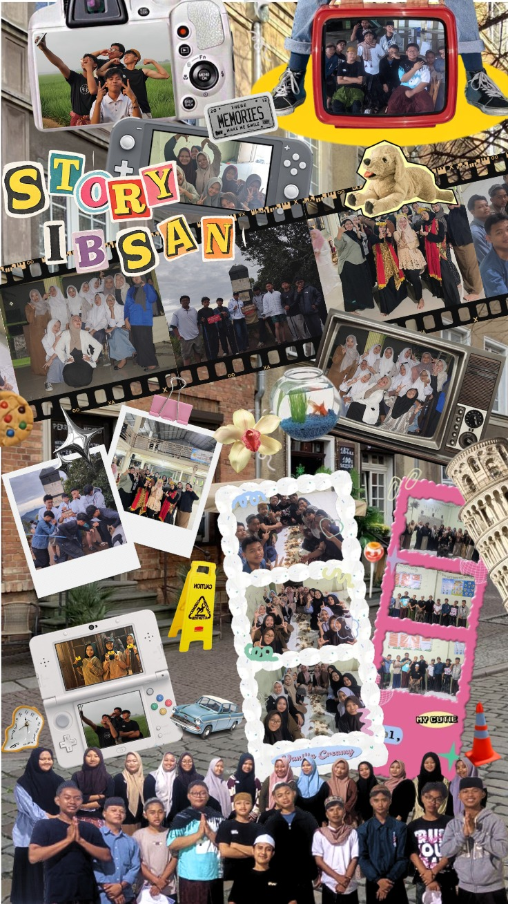

Galeri Kegiatan
Kenangan kami.



Netodas famiglia - ibtida tsani ma
Tahun Ajaran 2024 - 2027
Netodas famiglia dalah salah satu dari beberapa kelas ngaji di pondok pesantren baitul burhan, di bawah bimbingan mg.mukti fauzi,dan mg.fakih munawir. Motto kelas kami: "Belajar Bersama, Sukses Bersama."
daftar kelas kami.
| Nama | Umur | TTD |
|---|---|---|
| iki | 17 | karawang 31/08/09 |
| supri | 17 | karawang 15/11/08 |
| hisyam | 17 | karawang 13/05/09 |
| irwansyah | 17 | karawang -/-/09 |
| rijal | 17 | karawang 16/02/09 |
| galang | 17 | karawang 09/04/09 |
| zulfan | 17 | karawang 27/03/09 |
| syukur | 17 | cilacap 04/11/09 |
| danif fauzan | 19 | purwakarta 11/05/07 |
| intan | 17 | bekasi 26/07/09 |
| ica | 17 | karawang 26/07/09 |
| gaida | 18 | karawang 01/08/08 |
| pipit | 19 | karawang 19/11/07 |
| siti | 17 | karawang 12/11/09 |
| nabila | 17 | karawang 06/08/09 |
| hilmi | 17 | karawang 02/08/09 |
| arla | 17 | karawang 24/07/09 |
| nadila | 17 | karawang 06/07/09 |
| eni | 17 | karawang 29/03/09 |
| zizah | 17 | karawang 07/02/09 |
| ely | 17 | karawang 29/04/09 |
| zaskia | 18 | karawang 24/04/08 |
Kenangan kami.

| Jam | subuh | duha | maghrib |
|---|---|---|---|
| 05:45 - 08.30 - 18:30 | •nahwu | •fikih/sorof | •opsional |
minggu, 10 Juni 2027
Rencana ke vila satu kelas, 17 Juni 2027
?